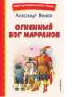

Серия «Книги для внеклассного чтения» — это подборка главных произведений русских и зарубежных авторов, входящих в школьную программу. В четвёртой части цикла «Изумрудный город» помогать жителям Волшебной страны будет Энни, младшая сестра Элли. Помните Урфина Джюса? Коварного столяра, который с помощью живительного порошка оживил целую армию дуболомов, но был побежден мудростью и смелостью героев? Так вот, он не оставляет попыток захватить Изумрудный город и стать его правителем. Он придумал новый план — собрать армию из Прыгунов, или Марранов, и с их помощью свергнуть Страшилу. Вместе с Энни друзья отправляются в приключение.